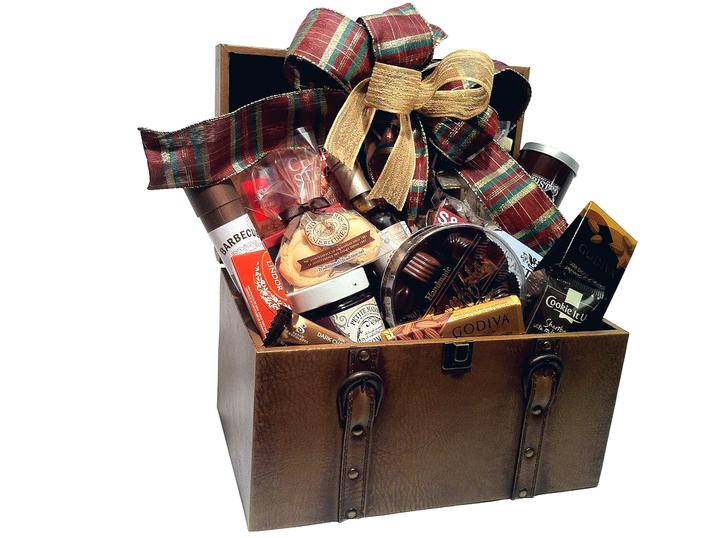
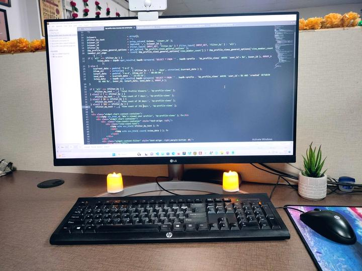

Rejoignez le réseau et recevez du travail toute l'année
Nous sommes une agence de communication et de mise en relation : nous qualifions les projets des clients, puis nous les confions à de vrais professionnels — enseignistes, imprimeurs, poseurs, agences de publicité, spécialistes du covering et de l'objet publicitaire. Deux mois à 0 € pour commencer, puis un abonnement fixe de 6 ou 12 mois — et aucune commission sur vos affaires.
Les 2 premiers mois à 0 €
Le réseau se constitue : les premières entreprises inscrites reçoivent les demandes de leur zone pendant deux mois, gratuitement et sans engagement.
Vous jugez sur pièces. À l'issue des deux mois, vous choisissez votre abonnement — 6 mois ou 12 mois — ou vous ne donnez pas suite, sans frais ni justification.
- Offre réservée aux premières entreprises inscrites, dans la limite des places par zone et par métier
- Deux mois à 0 €, sans prélèvement et sans carte bancaire demandée
- Aucune commission sur les affaires signées, pendant les deux mois comme après
- À l'issue des deux mois, vous choisissez entre l'abonnement 6 mois et l'abonnement 12 mois
- Aucun basculement automatique : sans accord explicite de votre part, l'accès s'arrête
- Contrat, accès et tarif bloqués sur la durée souscrite : six mois ou un an selon la formule
Un flux d'affaires, pas une liste de contacts revendus
La différence tient à une chose : chaque demande est qualifiée par téléphone et traduite en cahier des charges avant de vous parvenir, et elle n'est jamais adressée à plus de deux ou trois partenaires.
Des demandes qualifiées, pas des contacts revendus
Chaque projet est qualifié par téléphone et traduit en cahier des charges avant de vous être transmis. Vous chiffrez, vous ne débroussaillez pas. Et il n'est jamais adressé à plus de deux ou trois partenaires.
Un budget fixe, connu à l'avance
Un abonnement, pas une commission variable ni un achat de contacts à l'unité. Vous savez ce que la prospection vous coûte sur l'année, et chaque affaire supplémentaire améliore votre rentabilité au lieu de la diminuer.
Une visibilité que vous ne pourriez pas produire seul
Le site couvre 436 villes et 100 départements, 13 métiers et 12 secteurs d'activité. Votre fiche partenaire profite de cette surface, qu'une entreprise seule mettrait des années à construire.
Un filtrage par capacités réelles
Nacelle, CACES, parc de véhicules, machines d'atelier, hauteur d'intervention : votre profil technique détermine les demandes que vous recevez. Vous ne perdez pas de temps sur des chantiers que vous auriez refusés.
Vos données restent confidentielles
Vous n'êtes pas affiché dans un annuaire public, à côté de vos concurrents et à la merci du premier client qui compare dix fiches. Votre nom et vos coordonnées ne sortent que pour un projet précis, et seulement vers le client concerné. Personne ne sait que vous êtes du réseau, sauf ceux à qui nous vous présentons.
Vous gardez le client
Vous facturez en direct, vous fixez vos prix, vous conservez la relation et le service après-vente. Nous n'intervenons ni dans le contrat, ni dans l'exécution.
Une alternative claire à la franchise
Pas de droit d'entrée à cinq chiffres, pas de redevance sur le chiffre d'affaires, pas de fournisseurs imposés, pas de contrainte d'enseigne. Vous restez indépendant.
Deux mois à 0 €, puis 6 ou 12 mois pour la première année
Vous commencez sans rien payer et vous mesurez le flux réel de votre secteur. Vous ne choisissez la durée de votre abonnement qu'ensuite, en connaissance de cause — un budget de prospection fixe, sans pourcentage prélevé sur vos chantiers.
Les abonnements 6 et 12 mois donnent exactement les mêmes avantages. Nous ne pratiquons pas les formules à deux vitesses, où celui qui s'engage moins longtemps reçoit moins de demandes. Ce qui change, c'est le tarif : l'année revient à 890 € contre 980 € pour deux semestres, soit 90 € d'économie. Au-delà, deux formules élargissent la zone — une région entière ou la France complète.
Vous n'êtes pas publié. Nous ne tenons aucun annuaire de partenaires : votre nom, vos coordonnées et vos capacités restent dans notre fichier interne et ne sortent que pour un projet précis, vers le seul client concerné. Vos concurrents ignorent que vous êtes du réseau.
Trois niveaux de partenariat, trois labels : Partenaire Proximité, Partenaire Régional et Partenaire National. Vous l'affichez sur votre devanture, vos devis et vos véhicules ; il atteste que votre SIRET, vos assurances et vos habilitations ont été vérifiés. Et il détermine quelles demandes vous parviennent.
Découverte
Recevez les demandes de votre zone pendant deux mois avant de décider quoi que ce soit.
gratuit, sans carte bancaire et sans engagement
Pour qui : Toute entreprise du secteur qui veut mesurer le flux avant de s'engager
- Inscription au fichier partenaires du réseau, jamais publié
- Réception des demandes correspondant à vos capacités déclarées
- Zone d'intervention d'un département
- Jusqu'à 2 métiers déclarés
- Fiche entreprise avec logo, photos et coordonnées
- Aucune commission sur les affaires signées
- Bilan des demandes transmises au terme des deux mois
- Priorité d'envoi
- Zone étendue à 3 départements
Proximité — 6 mois
Tous les avantages du réseau, sur un engagement de six mois seulement.
soit 82 € par mois TTC — 408 € HT à votre charge réelle
Pour qui : Artisan, indépendant ou entreprise qui préfère ne pas s'engager sur l'année
- Inscription complète au fichier partenaires, jamais publié
- Réception des demandes correspondant à vos capacités déclarées
- Zone d'intervention : 3 départements de votre choix
- Métiers déclarés illimités
- Priorité d'envoi sur les demandes de votre spécialité
- Vos coordonnées transmises au seul client dont le projet correspond
- Votre nom n'apparaît nulle part : vos concurrents ignorent que vous êtes du réseau
- Bilan des demandes transmises à mi-parcours
- Accompagnement sur les dossiers multi-sites et les appels d'offres
- Label Partenaire Proximité à afficher sur vos supports
- Aucune commission sur les affaires signées
Proximité — 12 mois
Les mêmes avantages que la formule 6 mois, au meilleur tarif mensuel du réseau.
soit 74,17 € par mois TTC — 90 € de moins que deux semestres
Pour qui : Enseigniste, imprimeur, poseur ou agence qui veut un flux installé sur l'année
- Inscription complète au fichier partenaires, jamais publié
- Réception des demandes correspondant à vos capacités déclarées
- Zone d'intervention : 3 départements de votre choix
- Métiers déclarés illimités
- Priorité d'envoi sur les demandes de votre spécialité
- Vos coordonnées transmises au seul client dont le projet correspond
- Votre nom n'apparaît nulle part : vos concurrents ignorent que vous êtes du réseau
- Bilan semestriel des demandes transmises
- Accompagnement sur les dossiers multi-sites et les appels d'offres
- Label Partenaire Proximité à afficher sur vos supports
- Aucune commission sur les affaires signées
Rayonnement régional
Une région administrative entière, pour qui livre bien au-delà de son département.
soit 124,17 € par mois TTC — 1 242 € HT à votre charge réelle
Pour qui : Fabricant, imprimeur grand format ou agence disposant d'équipes mobiles
- Tout ce que comprend la formule Proximité
- Zone d'intervention : une région administrative complète
- Priorité d'envoi sur l'ensemble de la région
- Consultation systématique sur les dossiers régionaux de votre spécialité
- Bilan trimestriel des demandes transmises
- Interlocuteur dédié
- Label Partenaire Régional à afficher sur vos supports
- Aucune commission sur les affaires signées
Envergure nationale
Tout le territoire, pour les structures qui produisent et livrent partout.
soit 249,17 € par mois TTC — 2 492 € HT à votre charge réelle
Pour qui : Fabricant national, imprimeur industriel, réseau de poseurs, centrale d'achat
- Tout ce que comprend Rayonnement régional
- Zone d'intervention : France métropolitaine et outre-mer
- Priorité d'envoi sur les dossiers nationaux et multi-sites
- Consultation systématique sur tous les dossiers nationaux
- Demandes des collectivités et des marchés publics
- Bilan mensuel des demandes transmises
- Interlocuteur dédié et point trimestriel
- Label Partenaire National à afficher sur vos supports
- Aucune commission sur les affaires signées
Montants toutes taxes comprises, TVA 20 % incluse — que vous récupérez : la charge réellement supportée est de 408 € sur 6 mois, 742 € sur 12 mois, 1 242 € en Rayonnement régional et 2 492 € en Envergure nationale. Contrat, accès et tarif sont bloqués sur toute la durée souscrite. Sans reconduction tacite : vous décidez du renouvellement.
Qui reçoit quoi, et pourquoi les niveaux ne se valent pas
Chaque demande est classée selon l'étendue de la communication à réaliser, puis adressée aux partenaires du niveau correspondant. Ce n'est pas une hiérarchie de prestige : c'est une question de capacité à livrer.
3 départements de votre choix
Vous recevez les demandes locales de vos trois départements : commerces, artisans, professions libérales, PME mono-site. C'est le volume le plus régulier du réseau, et celui qui se transforme le mieux quand on est installé à côté.
Une région administrative entière
Vous ajoutez les déploiements régionaux et les consultations de collectivités du territoire. Ces dossiers sont moins nombreux mais nettement plus gros, et beaucoup d'entreprises locales ne peuvent pas les prendre faute d'équipes mobiles.
France métropolitaine et outre-mer
Vous êtes seul sur les campagnes nationales, les franchises et les réseaux multi-sites — les dossiers où le donneur d'ordre cherche un interlocuteur unique. Vous conservez par ailleurs toutes les demandes locales de vos départements.
| Ce que demande le client | Partenaires sollicités | Pourquoi eux |
|---|---|---|
| Une enseigne, une vitrine, un véhicule — un seul lieu | Partenaires Proximité du département concerné | La proximité conditionne le coût de déplacement et la réactivité du service après-vente |
| Deux à cinq sites dans un même département | Partenaires Proximité, en priorité ceux qui ont déclaré des équipes de pose | Un seul atelier peut couvrir l'ensemble sans multiplier les trajets |
| Un déploiement sur plusieurs départements d'une même région | Partenaires Régionaux de la région, avec des Proximité en appui sur la pose | Il faut une structure capable de coordonner un planning multi-sites |
| Un marché public ou une consultation de collectivité | Partenaires Régionaux et Nationaux selon l'étendue du lot | Ces dossiers exigent des références, une capacité financière et des délais tenus |
| Une campagne nationale, une franchise, un réseau multi-sites | Partenaires Nationaux exclusivement | Un donneur d'ordre national veut un interlocuteur unique, pas dix prestataires à coordonner |
| Un chantier isolé hors de la zone de tout partenaire | Partenaire le plus proche, quel que soit son niveau | Mieux vaut un professionnel compétent à cent kilomètres qu'une demande non servie |
Un partenaire Proximité ne reçoit pas les campagnes nationales, et c'est assumé : il n'aurait ni les équipes ni la trésorerie pour un déploiement de quarante points de vente. À l'inverse, un partenaire National reçoit aussi les demandes locales de ses départements — monter en niveau n'a jamais fait perdre les affaires du bas de gamme.
Combien faut-il signer pour rembourser l'abonnement ?
La question n'est pas ce que coûte l'abonnement, mais à partir de quel moment il est remboursé. Voici le calcul, fait avec nos propres grilles tarifaires et une hypothèse de marge délibérément prudente.
| Une seule affaire de ce type | Budget courant | Marge brute à 35 % | Abonnement 12 mois remboursé ? |
|---|---|---|---|
| Caisson lumineux LED simple face 2 m | 900 – 2 200 € | 315 – 770 € | Oui sur le haut de la fourchette |
| Lettres découpées relief rétro-éclairées | 1 800 – 6 000 € | 630 – 2 100 € | Oui, dès 2 100 € de vente |
| Totem lumineux double face 3 m | 3 000 – 9 000 € | 1 050 – 3 150 € | Oui, une seule suffit |
| Habillage complet de devanture | 4 000 – 20 000 € | 1 400 – 7 000 € | Oui, largement |
| Semi-covering imprimé sur fourgon | 1 100 – 2 400 € | 385 – 840 € | Oui sur le haut de la fourchette |
| Total covering sur fourgon | 2 600 – 5 500 € | 910 – 1 925 € | Oui, une seule suffit |
Autrement dit : une enseigne à lettres relief, un totem ou un covering complet dans l'année, et l'abonnement est remboursé. Tout le reste de ce que le réseau vous transmet est du chiffre d'affaires net de coût d'acquisition — puisqu'il n'y a aucune commission sur les affaires signées.
- Abonnement 12 mois742 € HT pour l'annéeDemandes qualifiées, jamais adressées à plus de 2 ou 3 partenaires
- Achat de contacts à l'unité25 à 60 € le contactNon qualifié, revendu simultanément à 5 ou 10 entreprises
- Franchise du secteur15 000 à 60 000 € de droit d'entréePlus une redevance annuelle assise sur votre chiffre d'affaires
Votre atelier est un argument commercial que nous mettons en avant
Un donneur d'ordre national qui fait fabriquer dans un atelier unique paie le transport de chaque support vers chaque site — un poste qui ne baisse jamais, quel que soit le volume. Nous vendons l'inverse : la fabrication au plus près du chantier. C'est votre outil de production, pas seulement votre camion, qui vous rend attractif sur ces dossiers.
Abonnement, franchise ou achat de contacts ?
Les trois façons de faire entrer des chantiers dans une entreprise de communication visuelle, mises côte à côte sans complaisance.
| Abonnement partenaire | Annuaire professionnel | Franchise du secteur | Achat de contacts | |
|---|---|---|---|---|
| Coût d'entrée | Aucun | Aucun | 15 000 à 60 000 € | Aucun |
| Coût récurrent | Abonnement fixe | Abonnement fixe | Redevance sur le chiffre d'affaires | Au contact, sans plafond |
| Ce que vous achetez | Des demandes qualifiées | Une fiche et de la visibilité | Une marque et un territoire | Des coordonnées |
| Commission sur affaires | Aucune | Aucune | Incluse dans la redevance | Aucune |
| Qui fait la prospection | Le réseau | Personne — vous attendez d'être trouvé | Vous, sous l'enseigne | La plateforme |
| Votre enseigne | La vôtre | La vôtre | Celle du réseau | La vôtre |
| Fournisseurs | Libres | Libres | Imposés | Libres |
| Nombre de destinataires par demande | 2 à 3 | Sans objet | Sans objet | 5 à 10 selon les plateformes |
| Demande qualifiée par téléphone | Oui | Sans objet | Sans objet | Rarement |
| Engagement | 6 ou 12 mois | 12 mois en général | 5 à 7 ans | Aucun |
Une franchise du secteur demande couramment un droit d'entrée à cinq chiffres, une redevance assise sur votre chiffre d'affaires, l'abandon de votre enseigne et des fournisseurs imposés, sur un engagement de cinq à sept ans. Notre modèle ne touche à aucun de ces points : vous gardez votre nom, vos fournisseurs, vos prix et votre indépendance.
La confusion la plus fréquente porte sur l'annuaire professionnel. Un annuaire vend de la visibilité : une fiche, un portrait, une mention dans une newsletter. C'est utile pour la notoriété, mais personne n'y prospecte à votre place et vous attendez d'être trouvé. Un apporteur d'affaires vend des demandes : quelqu'un cherche le client, qualifie le besoin par téléphone et vous transmet un cahier des charges. Les deux se cumulent très bien — ils ne se remplacent pas.
Quatre étapes, une semaine
Vous remplissez le questionnaire
Entreprise, contact, capacités de production, matériel, parc de véhicules, habilitations et assurances. Comptez 7 à 10 minutes : c'est cette précision qui déterminera la pertinence des demandes reçues.
Nous vérifions votre dossier
SIRET actif, assurances responsabilité civile professionnelle et décennale à jour, habilitations déclarées, cohérence des capacités annoncées. Réponse sous 48 heures ouvrées.
Entretien et choix de la formule
Un échange téléphonique de vingt minutes pour caler votre zone, vos métiers, votre capacité mensuelle et le montant minimum de chantier que vous acceptez. Vous choisissez ensuite la durée.
Mise en ligne et premières demandes
Votre fiche est publiée sous 72 heures. Les demandes correspondant à votre profil vous parviennent dès qu'elles se présentent, par e-mail et par téléphone pour les urgences.


Les entreprises que nous référençons
Nous cherchons des entreprises qui produisent ou qui posent, pas des intermédiaires qui revendent. Si vous avez un atelier, des machines, du matériel de hauteur ou des équipes terrain, vous êtes concerné.
 Enseignes
EnseignesEnseignes
Lettres relief, caisson lumineux, néon LED, drapeau, totem.
Le métier Signalétique
SignalétiqueSignalétique
Directionnelle, PMR, sécurité, plaques, totems d'orientation.
Le métierCovering véhiculeCovering véhicule
Total covering, semi-covering, lettrage, flotte, déco.
Le métier Impression
ImpressionImpression
Bâche, banderole, roll-up, panneau, adhésif, kakémono.
Le métier
Objets publicitairesObjets publicitaires
Goodies, textile floqué, EPI marqués, cadeaux d'affaires.
Le métier Maquette & création
Maquette & créationMaquette & création
Logo, charte, simulation façade, BAT, fichiers de production.
Le métier Pose & nacelle
Pose & nacellePose & nacelle
Travail en hauteur, dépose, raccordement, SAV, entretien.
Le métier Vitrophanie & PLV
Vitrophanie & PLVVitrophanie & PLV
Vitrine, dépoli, PLV magasin, stands et salons.
Le métier Découpe laser & CNC
Découpe laser & CNCDécoupe laser & CNC
Découpe laser, fraisage numérique, gravure, usinage sur mesure.
Le métier Imprimerie
ImprimerieImprimerie
Cartes, flyers, brochures, papeterie, catalogues, façonnage.
Le métier Impression 3D
Impression 3DImpression 3D
Prototypage, pièces techniques, lettres volumiques, maquettes.
Le métier
Site internetSite internet
Site vitrine, e-commerce, refonte, hébergement, maintenance.
Le métierRéférencement
SEO local, technique, contenu, fiche Google, campagnes.
Le métierCe que les entreprises nous demandent avant d'adhérer
Comment fonctionne la formule Découverte à 0 € ?
Vous remplissez le questionnaire, nous vérifions votre dossier, et vous recevez les demandes de votre zone pendant deux mois sans rien payer et sans carte bancaire. À l'issue de cette période, nous faisons le point sur ce qui vous a été transmis et vous choisissez votre abonnement pour la première année : 6 mois à 490 € TTC ou 12 mois à 890 € TTC. Si le flux ne vous convient pas, vous ne donnez pas suite et cela s'arrête là.
Pourquoi une formule à 0 € ?
Parce qu'un réseau qui démarre a un problème d'amorçage : sans partenaires nous ne pouvons pas servir les demandes, et sans demandes personne n'a envie de payer. Les deux premiers mois à zéro euro cassent ce blocage — vous jugez sur pièces, nous constituons le réseau. C'est temporaire et réservé aux premières entreprises inscrites.
Pourquoi un abonnement plutôt qu'une commission ?
Parce qu'une commission variable pousse l'intermédiaire à privilégier les gros dossiers et à vous envoyer un maximum de demandes, qualifiées ou non. L'abonnement inverse la logique : notre intérêt devient de vous garder d'une année sur l'autre, donc de vous transmettre des demandes que vous transformez réellement. Vous gardez par ailleurs 100 % de la marge sur chaque chantier signé.
Je suis une agence franchisée. Puis-je rejoindre le réseau ?
Oui, et c'est même une situation confortable des deux côtés. Un contrat de franchise vous attribue un secteur : il vous protège de vos confrères du réseau, mais il plafonne aussi votre croissance, puisque vous ne pouvez pas aller prospecter ailleurs. Nous ne vous demandons rien de contraire à cela — nous vous transmettons des demandes situées à l'intérieur de votre propre secteur, celui que votre contrat vous attribue déjà. Vous ne prenez le territoire de personne, vous recevez simplement des clients de votre zone que vous n'avez pas eu à démarcher. Deux réserves, dites franchement : relisez les clauses de votre contrat relatives aux apporteurs d'affaires extérieurs, certains réseaux imposent que toute demande passe par leur propre outil ; et parlez-en à votre franchiseur plutôt que de le découvrir plus tard. La formule Découverte à 0 € existe précisément pour tester cela sans rien engager.
Combien de partenaires par zone et par métier ?
Deux à quatre selon la densité du territoire. Nous ne saturons pas une zone : un partenaire qui ne transforme jamais rien ne renouvelle pas, ce qui n'a d'intérêt pour personne.
Que se passe-t-il si je ne reçois pas de demandes ?
Nous suivons le volume transmis à chaque partenaire. Si votre zone se révèle moins active que prévu, nous élargissons votre périmètre ou vos métiers déclarés sans surcoût. C'est précisément la raison d'être de la formule Découverte : deux mois à zéro euro vous permettent de mesurer le flux réel de votre secteur avant d'engager le moindre euro.
L'abonnement est-il reconduit automatiquement ?
Non, et la formule Découverte ne bascule pas davantage en abonnement payant toute seule. Aucune reconduction tacite nulle part : nous vous recontactons avant l'échéance avec le bilan des demandes transmises, et vous décidez. C'est un choix assumé — un partenaire reconduit par inertie est un partenaire mécontent.
Mon tarif peut-il augmenter en cours d'abonnement ?
Non. Le contrat, l'accès au réseau et le tarif sont bloqués sur toute la durée que vous avez souscrite : six mois pour la formule semestrielle, un an pour la formule annuelle. Le prix inscrit à votre adhésion est celui que vous payez jusqu'au terme, sans révision. Toute évolution éventuelle du tarif vous serait communiquée deux mois avant l'échéance, et ne s'appliquerait qu'à un renouvellement que vous seriez libre de refuser.
Le service de pose suit-il la même grille tarifaire ?
Oui, aux mêmes montants et dans les mêmes conditions. Les deux offres suivent la même grille depuis le départ.
Comment se définit ma zone d'intervention ?
Vous choisissez librement vos trois départements sur les formules 6 et 12 mois, et ils n'ont pas à être limitrophes : un atelier peut viser une métropole située à deux départements de là, où se trouvent réellement ses clients. Le questionnaire vous propose les départements voisins du vôtre à titre de suggestion, rien de plus. Si trois départements ne suffisent pas, la formule Rayonnement régional couvre une région administrative entière et Envergure nationale tout le territoire.
Puis-je changer mes départements en cours d'abonnement ?
Oui, une fois par période et sans frais : il suffit de nous le demander. Un déménagement d'atelier, l'embauche d'une équipe mobile ou une zone qui se révèle moins active que prévu sont autant de raisons légitimes. Nous ajustons également votre périmètre de notre propre initiative si le volume transmis reste faible.
Mon entreprise sera-t-elle affichée sur le site ?
Non, et c'est délibéré. Nous ne publions aucun annuaire de partenaires. Votre nom, vos coordonnées et vos capacités restent dans notre fichier interne et ne sortent que pour un projet précis, vers le seul client concerné. Un annuaire public vous expose à côté de vos concurrents, laisse n'importe qui comparer dix fiches et vous met en concurrence sur le prix avant même d'avoir parlé. Nous faisons l'inverse : le client reçoit deux ou trois noms choisis pour son projet, pas une liste.
Quelle différence avec un annuaire professionnel ?
Un annuaire vend de la visibilité : vous payez une fiche, un portrait, une mention dans une newsletter, puis vous attendez qu'on vous trouve. Personne n'y prospecte à votre place. Nous vendons des demandes : nous allons chercher le client, nous qualifions son besoin par téléphone, nous rédigeons un cahier des charges et nous vous le transmettons. Les deux se cumulent très bien — beaucoup de nos partenaires figurent dans un annuaire — mais ils ne se remplacent pas.
À quoi sert le label de partenaire ?
Chaque niveau d'adhésion donne droit à un label — Partenaire Local, Confirmé, Régional ou National — que vous pouvez afficher sur votre devanture, vos devis, votre site et vos véhicules. Il atteste que votre SIRET, vos assurances et vos habilitations ont été vérifiés par le réseau. Pour un client qui hésite entre deux entreprises, c'est un élément de réassurance concret, et il ne vous coûte rien de plus que votre abonnement.
Quelle différence entre l'abonnement 6 mois et l'abonnement 12 mois ?
La durée d'engagement et le prix, rien d'autre. Les prestations sont strictement identiques : même zone de trois départements, mêmes métiers illimités, même priorité d'envoi, même page dédiée, même mise en avant sur les pages villes. Nous avons écarté le principe des formules à deux vitesses — un partenaire qui paie est un partenaire servi. L'engagement annuel se récompense donc sur le tarif : 890 € contre 980 € pour deux semestres, soit 90 € d'économie.
Puis-je passer du 6 mois au 12 mois ?
Oui, à tout moment : la différence est calculée au prorata du temps restant, sans frais de changement. Comme les prestations sont les mêmes, ce choix ne porte que sur la durée et sur le rythme de renouvellement qui vous arrange.
Prenez-vous une commission en plus de l'abonnement ?
Non, jamais. L'abonnement est la seule contrepartie. Vous facturez le client en direct, au prix que vous fixez, et rien ne nous revient sur le chantier.
Acceptez-vous les auto-entrepreneurs ?
Oui, dès lors que le SIRET est actif et que les assurances sont à jour. La taille n'est pas un critère de sélection ; la fiabilité et l'adéquation des capacités en sont. Un poseur indépendant bien équipé et réactif vaut mieux qu'une structure importante mais indisponible.
Que se passe-t-il si un partenaire ne donne pas satisfaction ?
Nous suivons les retours clients après chaque affaire transmise. Un partenaire dont les litiges se répètent est retiré du réseau sans remboursement du temps restant, conformément aux conditions d'adhésion. C'est ce qui protège la crédibilité du réseau — et donc la vôtre.
Prêt à recevoir vos premières demandes ?
Le questionnaire prend 7 à 10 minutes. Il cartographie précisément votre atelier, votre matériel de hauteur, votre parc de véhicules et vos habilitations — c'est cette précision qui déterminera la pertinence des affaires que nous vous adresserons.